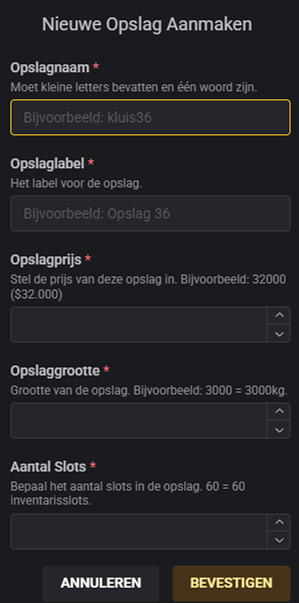

Nieuw Eigendom Creëren
Stap 1: Type & Interactie
- Gebruik
/createproperty. - Type: Shell.
- Interactiepunten: inventory en clothingmenu.
- Eigendomstype: House.


Stap 2: Coördinaten & Shell
- Stel Ingangspunt en Uitgangspunt in.
- Kies de gewenste Shell.
Stap 3: Naam, Prijs & Voltooien
- Naam: Vraag de koper naar de gewenste naam.
- Beschrijving: plaats 5 spaties.
- Prijs: Voer de prijs in en vink Te koop aan.
- Prijs: Laat de koper de eigendom aankopen aan de deur/garage

Privégarage aanmaken (/privategarage)
Gebruik /privategarage en klik op Privégarage criëren.


klik op Get Location voor de positie.
Voeg de eigenaar toe. Gebruik /garageowner [id] voor eigenaarschap en /geefgaragekey [id] voor toegang.
Stash Verhoging / Upgrade
Voor het upgraden van opslagruimte:
- Open de lijst met
/allproperties. - Zoek het eigendom op naam via de zoekbalk.
- klik op de Pen om te bewerken.


- Pas de Slots en het Gewicht aan (bijv. 800000 voor 800kg).
- Sla op via Werk Inventaris Bij.
Tuinzone Aanmaken
Stap 1: Selecteren
- Gebruik
/allpropertiesen zoek het eigendom op. - klik op de Pen om te bewerken.
- Klik op Tuinzone Aanmaken in het menu.


Stap 2: Tekenen
- Plaats punten rondom de tuin met LMB.
- Zorg dat de lijn het hele gebied omsluit.
Stap 3: Afronden
- Navigeer met WASD en pas hoogte aan met Q / E.
- Druk op ENTER om de zone definitief op te slaan.

Gang / Bedrijven Opslag (/locker)

Gebruik /locker voor nieuwe zakelijke kluizen:
- Naam: Eén woord in kleine letters.
- Grootte: Gewicht in KG (bijv. 3000 voor 3000kg).
- Let op: De instellingen kunnen na plaatsing niet worden gewijzigd.